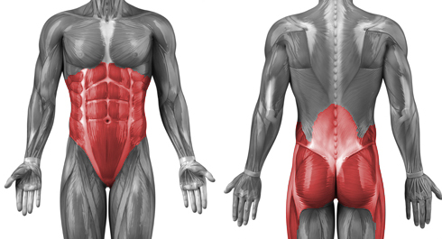

I think everybody will agree to a fact that the one, who has six-pack-ABS, is in great shape and a well-trained athlete. ABS are placed right in the visual center of our body, connecting upper and lower parts. So, if you have great hands and a massive torso, but the ordinary belly, you probably won’t catch jealous and admiring looks.
It is not a surprise that ABS have got so much attention. However, I think the one who has just started his way in street workout from our 100DW program is not ready to have six packs. Nevertheless, we will discuss it before the advanced block.
Core muscles

The core is traditionally assumed to originate most of the full-body functional movements, including most sports. In addition, the core determines, to a larger extent, a person's posture. Basically, the human anatomy is built to take force upon the bones and direct autonomic force, through various joints, in the desired direction. The core muscles align the spine, ribs, and pelvis of a person to resist a specific force, whether static or dynamic.
That’s why we recommended paying attention to the right, smooth technique.
So, the core muscles allow you to stabilize your body and keep balance. It is hard to see how they work, but easy to feel. You can do a little experiment. First, do a couple of push-ups on the floor. Then try to do push-ups with your hands on the ball. Then try to climb on some sort of the narrow bar and do push-ups there, holding your arms and legs in one line. Did you feel the difference? That’s why some training programs and different sports include exercises on unstable surfaces. This way you activate many muscles to stabilize your body.
Also remember the fact that core muscles are often the first to give up when you do exercises (for example, lowering your pelvis in push-ups). That twists your technique, and the wrong technique of exercises is the short way to a trauma. I think it is obvious that advanced, complex elements we borrowed from gymnastics won’t do without strong well-trained core muscles. So, pay proper attention to these muscles.
There are 2 simple ways to strengthen core muscles:
1. While doing our basics exercises focus on tension in these muscles (I have mentioned this before). Your torso must be straight, belly – tight. Head – looking affront.
2. Add some instability in your exercises (when you reached proper level). For example we have mentioned pushups on a fit ball or plyometric push-ups.
ABS
Speaking about ABS, I want to notice the following:
Novices. As I said before, if you just started you training and 100DW is your starting point, you don’t need to do isolating exercises to your ABS (like crunches). Because ABS do their part of the work in all our basic exercises, they will have optimum load.
Nutrition. You can see in numerous articles, magazines and the internet that: “ you should work on your ABS in the kitchen, not in the gym” and “everybody’s got six-pack, but it is hidden under fat”. All this low-fat nutrition protocols are great stuff, but if you don’t work with your ABS, you won’t have a great result.
ABS are muscles and like every muscle they have a definite size. If you eat well, but won’t do physical training, you will have a plane belly. If you want to have prominent six pack ABS, you need to train it.
Training. There are a lot of different videos how to train your ABS, but speaking friendly, a lot of them are garbage. Especially, think twice about effectiveness, if someone in the video doesn’t have his own ABS or surely takes steroids. Nevertheless, there are 5 videos that have proved their effectiveness and I know a lot of people personally, who built great ABS thanks to these routines.
Beginner mistakes
ZERO MISTAKE: Exercises ALONE are NOT ENOUGH
People want to get the coveted abs cubes just by hammering them with various exercises, every day, for several hours. But if you just train the abs muscles, you can get a powerful core and still not necessarily see cubes. There are many examples of people with a very strong core but no cubes — look at boxers or heavyweight mixed martial artists (Fedor Emelianenko).
MISTAKE #1: The wrong exercises
The first mistake is that beginners often pick an exercise that's too hard for their still-too-weak abs. Because of that they have no chance of doing the exercise slowly and under control (and that's rule #1 in the business of building muscle), and the technique starts to suffer wildly, sending hundreds of reps down the drain, or even leading to various injuries.
You need to understand that strength training is based on the simplest physics — Newtonian mechanics, Archimedes' lever. The longer the lever, the harder the exercise. On hanging leg raises on a bar that's especially easy to see. Bent legs are much easier to raise than straight ones, and if you have enough strength to do that exercise, that's the one you should do for abs training. Until you get stronger and can move further. But many beginners take as their base not physics and biomechanics, but videos where some wild fitness guy once again shows "the most powerful abs exercise."
MISTAKE #2: Using momentum
When the desire to do the exercise is bigger than the strength in the muscles, the body starts inventing all kinds of ways around that mismatch. Rumor has it that's exactly how kipping pull-ups appeared! And when it comes to raising the legs to the bar, the most common mistake is using a swing of the legs at the start of the movement to throw them up. But you know what? That way you don't train the abs at all, because they do no work. You can do a thousand reps and there still won't be a result.
MISTAKE #3: The wrong range of motion
The next common mistake is about the range in which beginners do leg raises. Partly it's tied to the previous mistake, but much more to not understanding how the abdominal muscles are built and what their functions are. Imagine that a rubber training band — the kind that will not only help you learn to do more pull-ups, muscle-ups, and various advanced exercises, but can also replace a gym when you travel or go on vacation — is your abdominal muscles. On one side you have the upper body, on the other the lower. For the abs to contract, you need to either tuck the pelvis or crunch the torso. Only then will the abs work. Everyone who just raises their legs to a 90-degree angle without tucking the pelvis is NOT TRAINING THE ABS (and you can see it on them), because raising the legs to that angle is not the job of the abs, but of a completely different muscle (the iliopsoas). Everyone who hyperextends at the bottom point is not increasing the load on the abs (they're only looking for spine problems), because hyperextension and returning to a normal position happens by contracting and relaxing the back muscles, not the abs.